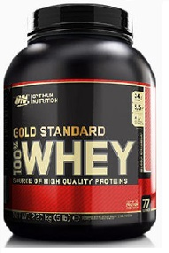
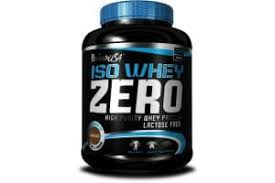
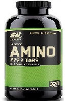
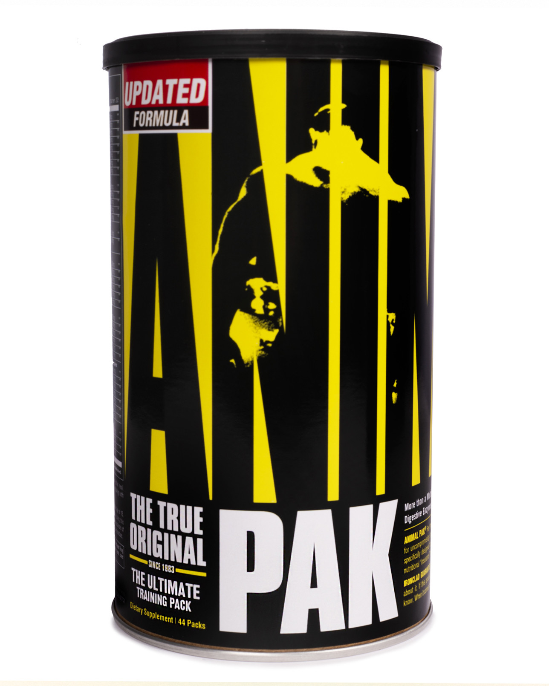
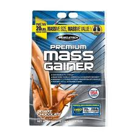
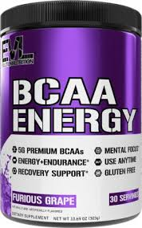
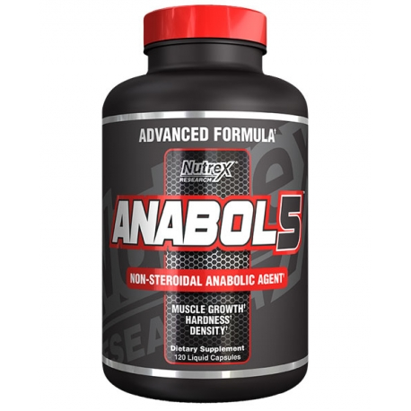
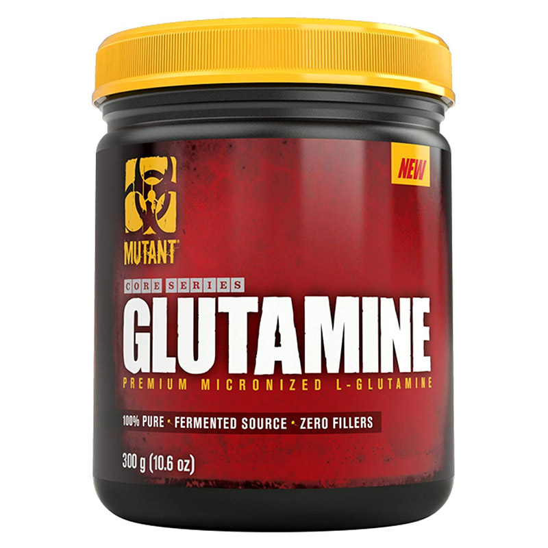

Whey protein helps provide protein and amino acids that serve as building blocks to speed recovery and increase muscle growth. It also increases the release of anabolic hormones like insulin..

Super Mass Gainer is one of the highest calorie gainers of his generation.

Amino acids are molecules that enter into the composition of proteins through their assembly by bonds called peptides..

Super Mass Gainer is one of the highest calorie gainers of his generation.

True Mass is a high quality, protein rich protein powder designed to increase your calorie

BCAAs are known to increase protein synthesis. Combining BCAAs and strength training promotes maximum protein synthesis.

HI-Anabol Protein - Consists of a blend of 20% WPI isolate whey protein, 45% WPC whey protein concentrate and 35% SPI soy protein. The combination of these three elements has an ideal profile of amino acids needed to build your muscles..

Glutamine or L-glutamine is the most abundant amino acid in the blood and in muscles. It plays a role in protein synthesis, immune protection, maintaining the integrity of the intestinal wall and the body's acid-base balance.